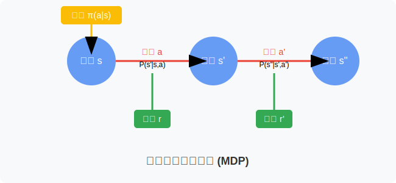
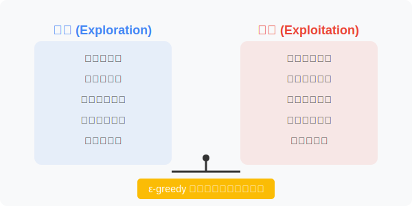
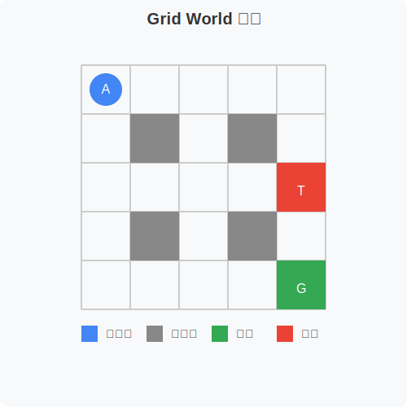
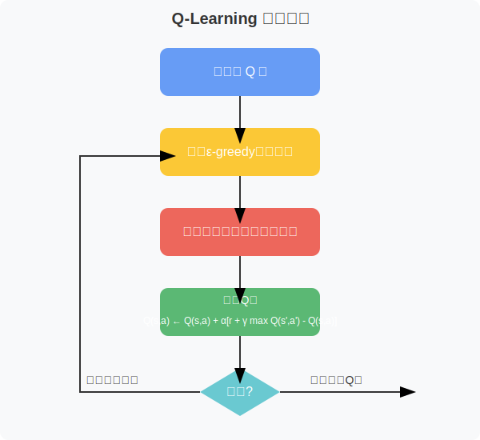
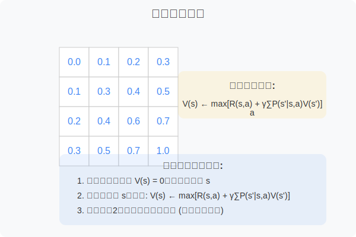

第二周：强化学习框架与迷宫环境
- 理解马尔可夫决策过程 (MDP) 的基本思想
- 掌握策略 (Policy)、价值函数 (Value Function) 的概念
- 理解探索 (Exploration) 与利用 (Exploitation) 的平衡
- 学习使用 Gymnasium 库搭建迷宫环境 (Grid World)
- 掌握使用 AI 辅助工具进行代码补全和修改
第一次课：强化学习框架与迷宫环境 (Grid World) 搭建
马尔可夫决策过程 (Markov Decision Process, MDP) 是强化学习的核心框架，用于形式化描述智能体与环境的交互过程。
状态 (State, S)
- 环境的描述，包含了智能体做出决策所需的信息
- 马尔可夫性质: 当前状态包含了所有历史信息，未来的状态只依赖于当前状态和动作，而与过去的历史无关
- 在迷宫环境中，状态可以是智能体在迷宫中的位置坐标
动作 (Action, A)
- 智能体在每个状态下可以采取的行为
- 在迷宫环境中，动作可以是向上、下、左、右移动
转移概率 (Transition Probability, P)
- 智能体在状态 \(s\) 采取动作 \(a\) 后，转移到下一个状态 \(s'\) 的概率
- \(P(s'|s, a)\) 表示在状态 \(s\) 采取动作 \(a\) 转移到状态 \(s'\) 的概率
- 在确定性迷宫环境中，转移概率是确定的；在非确定性环境中可能存在随机性
奖励 (Reward, R)
- 智能体在与环境交互后获得的反馈信号，用于评价动作的好坏
- \(R(s, a, s')\) 表示在状态 \(s\) 采取动作 \(a\) 转移到状态 \(s'\) 后获得的奖励
- 在迷宫寻宝游戏中，到达宝藏获得正奖励，撞墙或陷阱获得负奖励
策略 (Policy, \(\pi\))
- 智能体根据当前状态选择动作的规则，可以是确定性的或随机性的
- \(\pi(a|s)\) 表示在状态 \(s\) 下选择动作 \(a\) 的概率
- 强化学习的目标是学习最优策略，使得智能体获得最大的累积奖励

价值函数用于评估在给定状态或状态-动作对下，未来预期累积奖励的期望值。价值函数是强化学习算法的核心概念之一。
V 函数 (State Value Function)
- \(V_{\pi}(s)\) 表示在策略 \(\pi\) 下，从状态 \(s\) 出发，未来可以获得的期望累积奖励
- V 函数评估的是状态的价值，即处于某个状态的好坏程度
- V 函数越大，表示当前状态越好，未来可以获得的期望奖励越高
Q 函数 (Action Value Function)
- \(Q_{\pi}(s, a)\) 表示在策略 \(\pi\) 下，从状态 \(s\) 出发，选择动作 \(a\) 后的期望累积奖励
- Q 函数评估的是状态-动作对的价值
- Q 函数越大，表示在当前状态下，该动作越好
V 函数和 Q 函数的关系
\(V_{\pi}(s) = \sum_{a \in A} \pi(a|s) Q_{\pi}(s, a)\)
V 函数的数学定义
\[V_{\pi}(s) = \mathbb{E}_{\pi}\left[ \sum_{k=0}^{\infty} \gamma^k R_{t+k+1} | S_t = s \right]\]
- \(\gamma\) 是折扣因子，取值范围 [0, 1]
- \(R_t\) 是在时间步 t 获得的奖励
- \(\mathbb{E}_{\pi}\) 表示在策略 \(\pi\) 下的期望
Q 函数的数学定义
\[Q_{\pi}(s, a) = \mathbb{E}_{\pi}\left[ \sum_{k=0}^{\infty} \gamma^k R_{t+k+1} | S_t = s, A_t = a \right]\]
贝尔曼方程
贝尔曼方程是强化学习中的核心等式，描述了当前状态的价值与下一个状态价值之间的关系：
V 函数的贝尔曼方程： \[V_{\pi}(s) = \sum_{a} \pi(a|s) \sum_{s',r} p(s',r|s,a)[r + \gamma V_{\pi}(s')]\]
Q 函数的贝尔曼方程： \[Q_{\pi}(s,a) = \sum_{s',r} p(s',r|s,a)[r + \gamma \sum_{a'} \pi(a'|s') Q_{\pi}(s',a')]\]
最优价值函数
强化学习的目标是找到最优策略，对应的最优价值函数定义为：
最优状态价值函数： \[V^*(s) = \max_{\pi} V_{\pi}(s) = \max_{a} Q^*(s,a)\]
最优动作价值函数： \[Q^*(s,a) = \max_{\pi} Q_{\pi}(s,a) = \mathbb{E}\left[R_{t+1} + \gamma \max_{a'} Q^*(S_{t+1},a') | S_t=s, A_t=a\right]\]
如果我们知道最优价值函数，最优策略可以通过选择每个状态下价值最高的动作得到： \[\pi^*(s) = \arg\max_{a} Q^*(s,a)\]
探索 (Exploration) 与利用 (Exploitation) 是强化学习中一个核心的权衡问题：
探索 (Exploration)
- 尝试新的动作，探索未知的状态和动作空间
- 可能发现更优策略，但也可能浪费时间在无用区域
利用 (Exploitation)
- 根据已知经验选择当前最优动作
- 保证稳定收益，但可能错过更好的策略
\(\epsilon\)-greedy 策略
- 以概率 \(\epsilon\) 随机选择动作 (探索)
- 以概率 \(1-\epsilon\) 选择当前最优动作 (利用)
- \(\epsilon\) 随训练进行逐渐减小

新市场尝试 (探索)
- 进入新的市场领域
- 开发新的产品线
- 拓展新的客户群体
现有市场深耕 (利用)
- 优化现有产品
- 提高客户满意度
- 提升市场份额
平衡策略
- 双元策略：同时进行探索和利用
- 阶段性策略：不同发展阶段侧重不同策略
Gymnasium 基础使用
# 安装 Gymnasium
# pip install gymnasium
import gymnasium as gym
# 创建 CartPole 环境
env = gym.make("CartPole-v1", render_mode="human")
# 重置环境
observation, info = env.reset()
# 随机选择动作
action = env.action_space.sample()
# 执行动作
observation, reward, terminated, truncated, info = env.step(action)
# 关闭环境
env.close()自定义 Grid World 环境
import gymnasium as gym
from gymnasium import spaces
import numpy as np
class GridWorldEnv(gym.Env):
metadata = {"render_modes": ["human", "rgb_array"], "render_fps": 4}
def __init__(self, render_mode=None, size=5):
super().__init__()
self.size = size # Grid world size
self.window_size = 512 # PyGame window size
# 动作空间：上下左右
self.action_space = spaces.Discrete(4)
# 观测空间：智能体位置
self.observation_space = spaces.Discrete(size * size)
# Grid world 地图
self._grid_map = np.array([
[0, 0, 0, 0, 0],
[0, 1, 1, 1, 0],
[0, 1, 2, 1, 0],
[0, 1, 1, 1, 0],
[0, 0, 0, 0, 0]
])
# 初始化位置信息
self._target_location = np.array([2, 2])
self._trap_location = np.array([4, 4])
self._agent_start_location = np.array([0, 0])
self._agent_location = np.array([0, 0])
self.render_mode = render_mode
# 初始化渲染
if render_mode is not None:
import pygame
pygame.init()
pygame.font.init()
self.window = pygame.display.set_mode(
(self.window_size, self.window_size)
)
self.clock = pygame.time.Clock()- 完成 Grid World 环境的其他方法实现：
step()方法：处理动作执行和奖励计算render()方法：可视化当前环境状态close()方法：清理资源
- 实现一个简单的策略：
- 使用 \(\epsilon\)-greedy 策略
- 记录并分析智能体表现
- 思考题：
- MDP 的马尔可夫性质在实际应用中是否总是成立？
- 如何在你的专业领域应用探索与利用的概念？
- Grid World 环境中，不同的奖励设计会如何影响智能体的行为？
- 阅读材料：
- Sutton & Barto 强化学习教材第3章
- Gymnasium 自定义环境教程
- PyGame 基础教程
- 视频资源：
- David Silver 强化学习课程第2讲
- Grid World 环境实现教学视频
- 下周预习重点：
- 动态规划算法
- 值迭代与策略迭代
- Q-learning 算法基础
第二次课：小组项目一：迷宫寻宝 (Grid World) 环境搭建
1. 小组项目一：迷宫寻宝 (Grid World) 环境搭建
- 项目目标：
- 以小组为单位，基于第一次课的代码框架，独立完成迷宫环境 (Grid World) 的搭建。
- 扩展迷宫地图，设计更复杂的迷宫场景 (例如：增加更多障碍物、宝藏、陷阱等)。
- 实现基本的环境渲染，能够可视化智能体在迷宫中的探索过程。
- 代码框架：
- 提供第一次课中
GridWorldEnv类的代码框架 (作为项目的基础)。 - 小组需要自行完成代码的补全、修改和扩展。
- 提供第一次课中
- AI 辅助工具：
- 鼓励学生充分利用 GitHub Copilot, Tabnine 等 AI 辅助编程工具，提高开发效率。
- 但强调：AI 工具是辅助手段，学生需要理解代码逻辑，不能完全依赖 AI 工具生成代码，而忽略代码理解和调试。
- 项目提交：
- 小组提交完整的 Grid World 环境代码 (Python 文件)。
- 无需提交项目报告。
2. 答疑与指导
- 解答学生在环境搭建过程中遇到的问题。
- 重点关注：
- Gymnasium 库的使用方法。
- 自定义环境类的结构和接口。
- 状态空间、动作空间、奖励函数的设计。
- 环境渲染的实现。
- AI 辅助工具的使用技巧。
3. 布置小组项目一：迷宫寻宝 (Grid World) 环境搭建
- 明确项目要求、提交时间和评分标准 (本次项目不评分，作为后续项目的基础)。
- 鼓励小组积极探索、尝试，遇到问题及时提问。
- 建议小组：
- 提前开始项目，预留充足的开发和调试时间。
- 分工合作，提高开发效率。
- 充分利用 AI 辅助工具，但也要注重代码理解和调试能力。
- 相互交流、学习，共同解决问题。
课后作业
- 完成小组项目一：迷宫寻宝 (Grid World) 环境搭建。
- 思考题：
- 在 Grid World 环境中，如何设计更有效的奖励函数，以引导智能体更快地找到宝藏？
- 如果迷宫地图非常大，状态空间会变得很大，对强化学习算法会产生什么影响？
- 如何使用 AI 辅助工具更高效地进行强化学习代码开发？
预习资料
- 阅读材料：
- Gymnasium 官方文档 (自定义环境部分)。
- 强化学习算法基础：Q-Learning 算法初步。
- 探索-利用平衡的更多策略 (例如：\(\epsilon\)-greedy 退火策略、UCB 算法等)。
- 视频资源：
- Grid World 环境搭建详解。
- Q-Learning 算法原理讲解 (初步了解)。
- 探索与利用的平衡策略讲解。
- 下周预习重点：
- Q-Learning 算法原理和步骤。
- Q-Table 的更新规则。
- 使用 Q-Learning 算法解决 Grid World 迷宫寻宝问题。
请注意:
- 代码框架: 第一次课的代码框架，指的是第一次课中
GridWorldEnv类的代码。学生需要基于这个代码框架进行扩展和修改，完成小组项目一。 - 环境注册: 请确保在运行 Grid World 环境代码之前，已经执行了环境注册代码 (
register(...))。可以将注册代码放在单独的文件中，或者放在运行环境代码的脚本文件的开头。 - AI 辅助工具: 鼓励学生使用 AI 辅助工具，但务必强调理解代码逻辑的重要性，避免过度依赖 AI 工具。
- 小组项目: 小组项目一旨在让学生熟悉 Gymnasium 库和自定义环境的流程，为后续的强化学习算法实践打下基础。

def step(self, action):
"""
执行一步动作，返回下一个状态、奖励、是否终止等信息
参数:
action: 动作，0=上, 1=右, 2=下, 3=左
返回:
observation: 新的状态
reward: 获得的奖励
terminated: 是否到达终止状态（目标或陷阱）
truncated: 是否达到最大步数
info: 额外信息
"""
# 动作映射到方向变化 (行,列)
direction = {
0: (-1, 0), # 上
1: (0, 1), # 右
2: (1, 0), # 下
3: (0, -1) # 左
}
# 计算新位置
delta_row, delta_col = direction[action]
new_position = self._agent_location + np.array([delta_row, delta_col])
# 检查是否越界或撞墙
if (
0 <= new_position[0] < self.size
and 0 <= new_position[1] < self.size
and self._grid_map[new_position[0], new_position[1]] != 1
):
self._agent_location = new_position
# 获取当前位置的单元格类型
current_cell = self._grid_map[self._agent_location[0], self._agent_location[1]]
# 初始化奖励和终止状态
reward = -0.1 # 每一步的小惩罚，鼓励快速到达目标
terminated = False
truncated = False
# 根据当前位置计算奖励和是否终止
if np.array_equal(self._agent_location, self._target_location):
# 到达目标
reward = 1.0
terminated = True
elif np.array_equal(self._agent_location, self._trap_location):
# 掉入陷阱
reward = -1.0
terminated = True
# 将智能体位置转换为离散观测空间的索引
observation = self._agent_location[0] * self.size + self._agent_location[1]
# 如果需要渲染，渲染当前帧
if self.render_mode == "human":
self.render()
return observation, reward, terminated, truncated, {}
